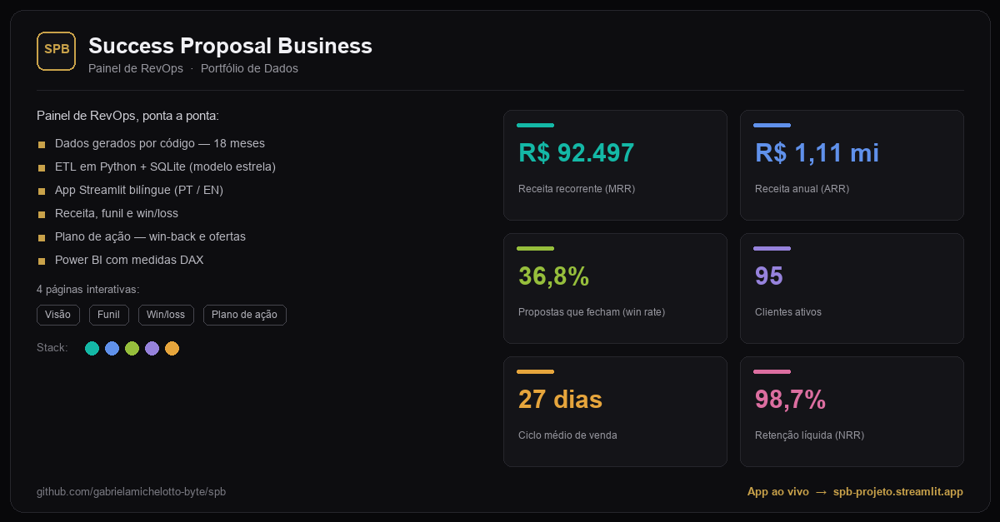

01 / 03
RevOps
RevOps

Portfolio project · Simulated environment
SPB RevOps
I modelled a software company and its end-to-end commercial operation. The system connects revenue, funnel, win/loss and retention data to reveal where value is lost and recommend the next action for every stalled or lost opportunity.
ScopeEnd-to-end operation
Data18 months generated in code
Experience4 interactive pages · PT/EN
DecisionRecommendation engine
Python · SQLite · Streamlit · Power BI
Explore project ↗